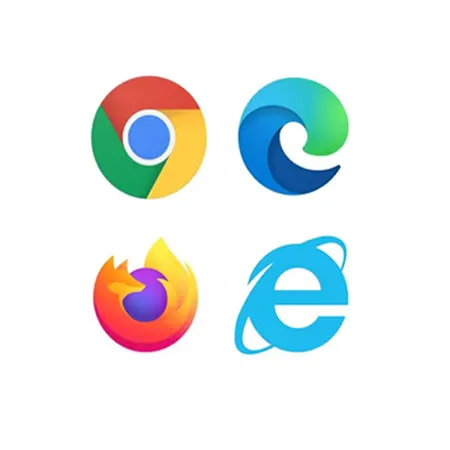

前言
網頁開發分為前端與後端，本站內容皆為前端部份，以下先介紹前端開發不可或缺的工具及環境。
VS CODE
作為開發者最重要的開發工具，vs code是現今最熱門之一的主流編輯器，作為一個超熱門的編輯器其用途並不僅限於網頁開發，在安裝各種套件及設置環境後也能進行其他程式語言如:Python、Java、C/C++。
俗話說工欲善其事，必先利其器，在vs code中有各種擴充套件供免費使用，善用套件可以使開發時間縮短一倍以上。
版本控制
身為一個有良好習慣的開發者一定要使用版本控制管理自己的專案，在這邊推薦使用Git搭配GitHub平台，
在Windows環境下vs code預設終端機為powerShell，在vs code內使用ctrl+`快速鍵可以開啟終端機介面由於Windows平台沒有自帶Git控制系統(Linux、Mac系統則有)，必須從Git官網下載套件安裝後才可以在終端機內使用。
瀏覽器
好的開發者工具會帶你上天堂這句話不是沒有道理的，由於chrome市占率是最高的也支援不少API，如果你的主要開發瀏覽器不是chrome那我建議你現在就開始改用。
在前端有各式各樣的環境存在，有必須支援IE的原因，也有考慮到使用者是使用safari或firefox等部份功能不支援的瀏覽器，在執行瀏覽上會產生了相容性問題，因此就算是你裝了chrome，在測試上仍然需要將其他瀏覽器一併納入。
